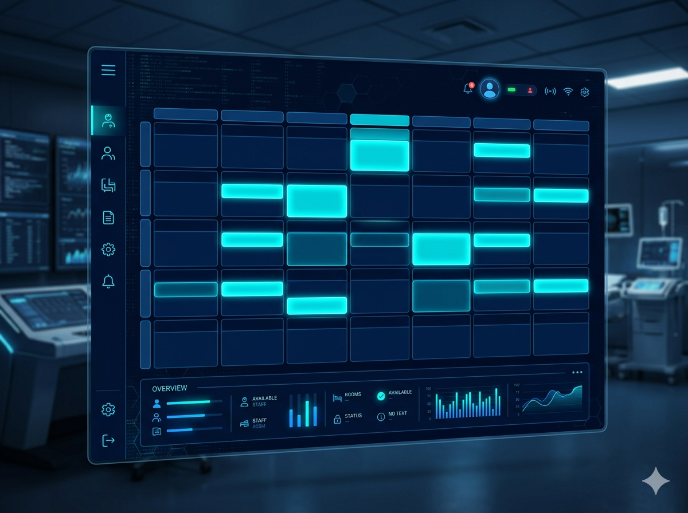
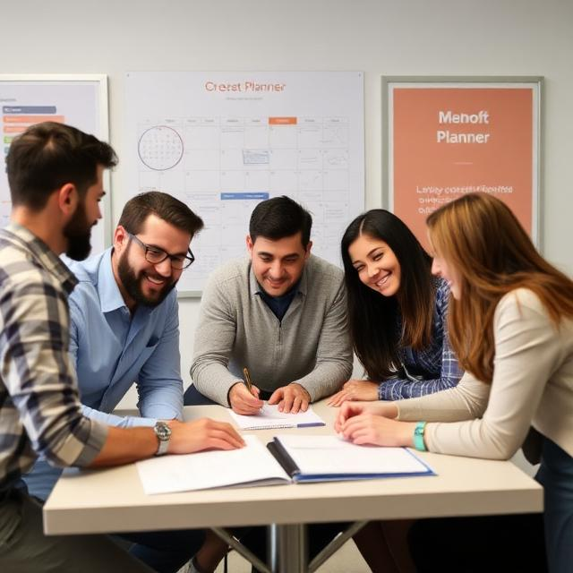
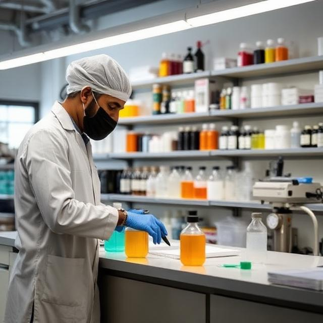
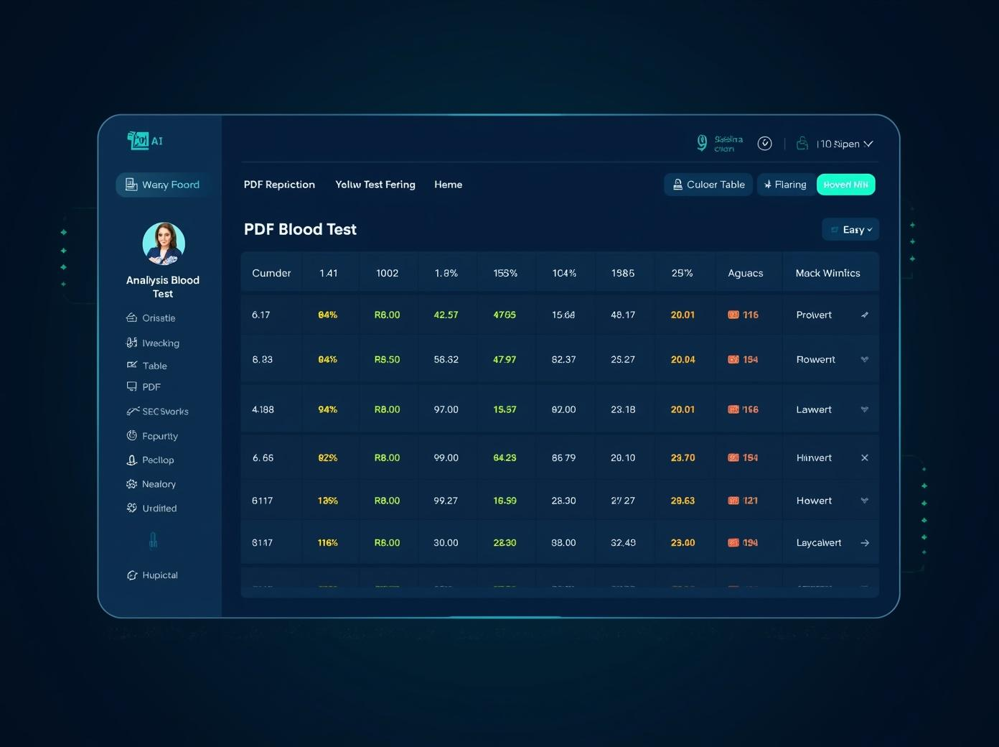
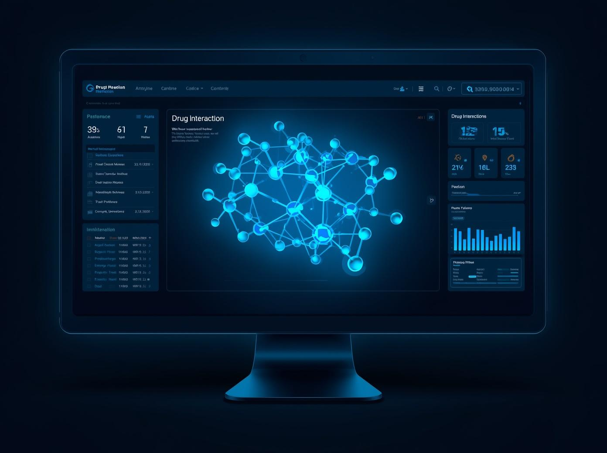
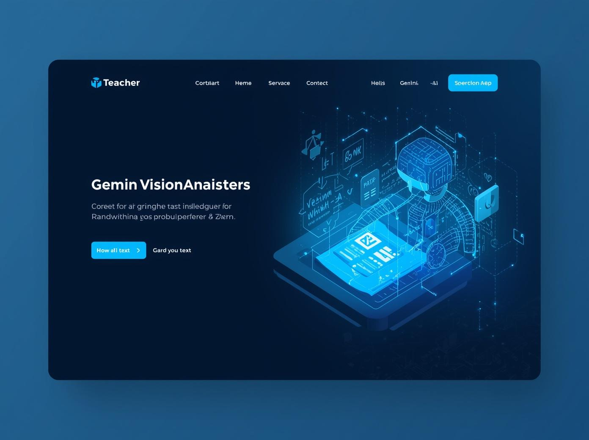
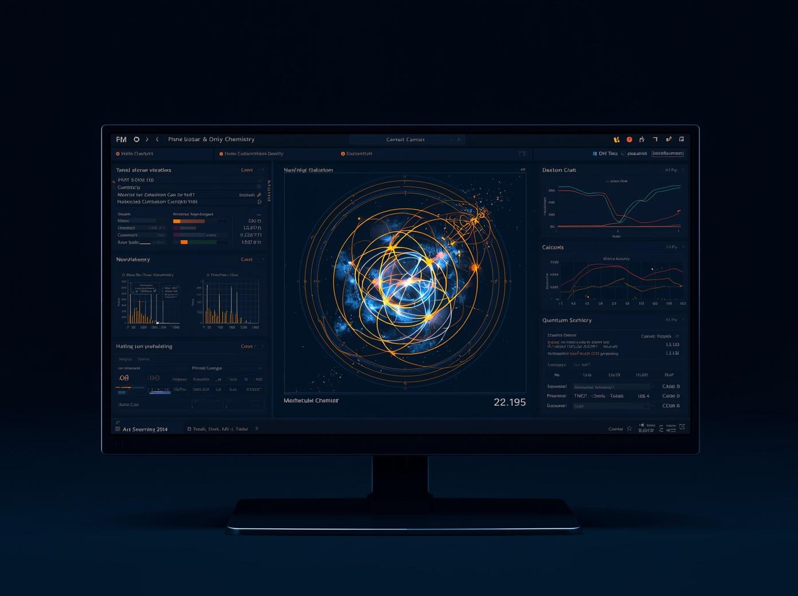
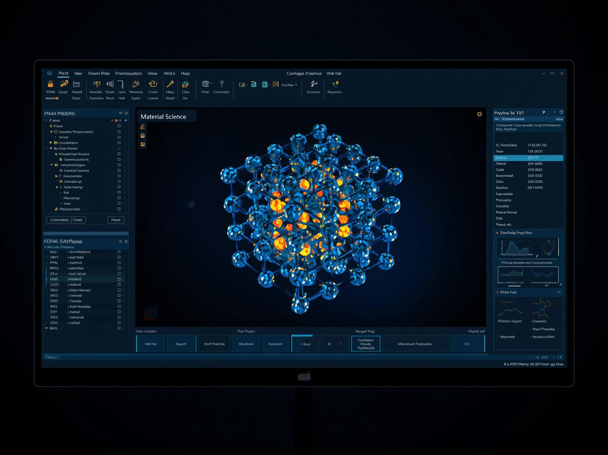
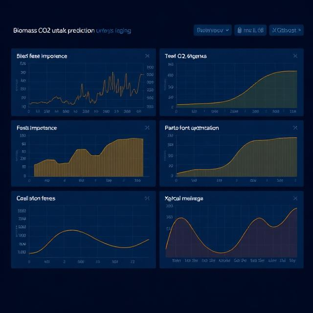
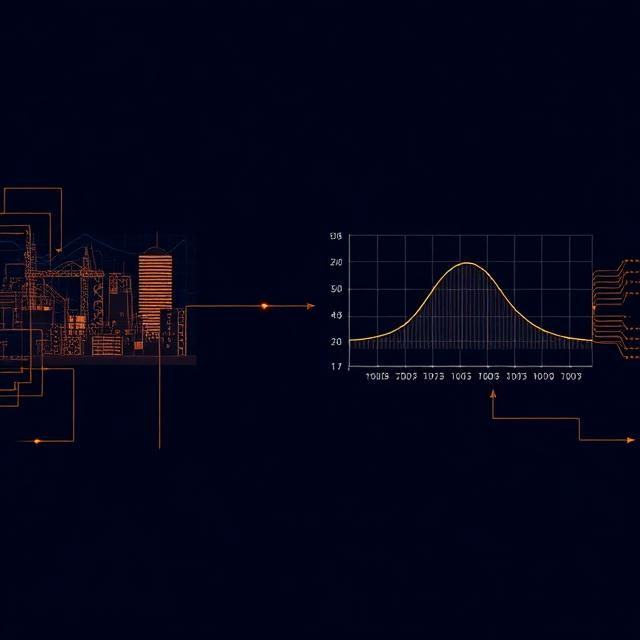

Apps & Tools
From the lab bench to the clinic, from the classroom to the data pipeline — these are applications built to solve real problems. Each project was developed from scratch, driven by a simple question: what tool do researchers, doctors, and educators actually need? The result is a collection of full-stack web apps and desktop tools that combine scientific domain knowledge with modern software engineering — clean architecture, real-time interfaces, and AI where it makes sense.
Built by me

01
Medicine · Web App
A full-stack web application for managing medical appointments in clinical environments. Doctors and admins can define their availability, and patients can book slots based on appointment type and duration — with automatic conflict detection. Features role-based authentication (admin / doctor), multi-doctor support, and a smart scheduling engine that prevents overlaps in real time.
View App →02
Medicine · Web App
A real-time emergency room management system for tracking patients from arrival to discharge. Each patient is assigned a triage level (red, yellow, green), and staff can log clinical notes, request tests, and mark results as they come in. Includes a built-in day simulator to stress-test the system with realistic ER scenarios and concurrent patient flows.
View App →
03
Healthcare · Web App
A workforce scheduling platform that automatically generates monthly shift rosters for medical or operational teams. The algorithm respects each worker's shift preferences, approved vacation days, public holidays, and configurable minimum staffing rules per shift type. Admins can review, adjust, and export the final schedule as a PDF report.
View App →
04
Lab & Science · Web App
A flexible inventory management system that adapts to any Excel file — no fixed schema required. Upload your spreadsheet, map your columns (stock, expiry date, units, identifier), and the app auto-configures the interface. Includes a live dashboard, movement history, stock alerts, multi-user access control, data export, and automated backups. Designed for research labs, clinics, or any team managing consumables and equipment.
View App →05
Science · Web App
A real-time monitoring platform for laboratory instruments. Connect multiple devices simultaneously — each running in its own thread — via Serial, Modbus, MQTT, or simulation mode. Live readings are streamed to the browser via WebSockets, with a configurable alert system that triggers when variables exceed defined thresholds. Supports instrument recipes, report generation, and a full device catalog with per-equipment variable profiles.
View App →
06
Medicine · Desktop App
A professional desktop application for analysing medical lab reports from PDF files. It automatically extracts blood test values, compares them against reference ranges, and colour-codes each result — green (normal), yellow (borderline), red (out of range). Includes an integrated medical calculator covering glomerular filtration rate (CKD-EPI), BMI, and cardiovascular risk score. Results can be exported to structured Excel reports for longitudinal patient follow-up.
View App →
07
Medicine · Desktop App
A desktop clinical management tool for tracking patients and detecting drug interactions. Each patient gets a dedicated Excel record where medical tests (PDF analytics, diagnostic images) can be attached and organised. A built-in chronological diary logs consultation notes. The drug interaction engine cross-references the patient's medication list to flag conflicts and suggest safer alternatives. Generates complete Word patient reports.
View App →
08
Education · Web App
A full-stack web platform for teachers to manage their entire workflow — students, subjects, exams, grades, agenda, and statistics — all in one place. The standout feature is an AI-powered autocorrection engine using Google Gemini Vision: upload a photo of a student's handwritten exam alongside the solution, and the AI grades it automatically applying configurable criteria, partial scoring, and strictness levels. Generates PDF reports per student.
View App →Scientific Code
Beyond applications, science lives in pipelines, scripts, and models. These are the computational tools developed for real research problems — from high-throughput quantum chemistry workflows to production ML pipelines and materials discovery platforms.

01
Gaussian & ORCA · High-throughput
A complete Python toolkit for high-throughput quantum chemistry workflows. Automates input file generation for Gaussian and ORCA from molecule lists, parses output files extracting energies, HOMO/LUMO, frequencies and atomic charges, and computes a full set of electronic molecular descriptors — ionisation potential, chemical hardness, electrofilicity index, and solvation energies. Includes a substituent generator that combinatorially builds and screens thousands of functionalised derivatives.

02
Materials Science · REST API · ICMM-CSIC Madrid
A full-stack REST API and visual explorer for Metal-Organic Framework (MOF) adsorption data of PFAS contaminants, developed as a prototype for ICMM-CSIC Madrid. The FastAPI backend connects to a PostgreSQL database of MOF/PFAS pairs with DFT-D3 adsorption energies, exposing endpoints for filtering, heatmap generation, and statistics. A self-contained frontend visualises the data interactively. Fully containerised with Docker Compose.

03
Machine Learning · CSIC-INCAR
A production-ready machine learning pipeline developed at CSIC-INCAR for predicting CO2 uptake from biomass-derived materials. Trains and tunes Random Forest and XGBoost models using Optuna (100+ trials), with full SHAP analysis, RFECV feature selection, and partial dependence plots. Includes a multi-objective inverse design engine (NSGA-II, Bayesian, CMA-ES) that finds optimal material conditions for maximum CO2 capture, and a Streamlit dashboard for interactive exploration without code.

04
Materials Science · ML · Industry
An end-to-end platform bridging industrial experimental data with machine learning to predict mechanical properties of materials — starting with Young's modulus. Industry partners contribute experimental measurements (stress-strain curves, material composition) which are stored in a structured database. A trained ML model then predicts target properties for new materials on demand, accelerating materials discovery and qualification without costly physical testing.